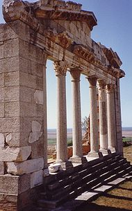

Historia
Historia e Shqipërisë në të vërtetë nuk përfshin vetëm të dhënat historike të hapësirës gjeografike mbi të cilën gjenden territoret shqiptare por edhe hapësirat e tjera të banuara me shqiptarë e që kanë mbetur jashtë kufijve të Shqipërisë së sotme e që në të kaluarën kanë qenë një tërësi. Lashtësia mendohet që rrjedha parahistorike e shqiptarëve të jetë nga një fis i stërlashtë indo-evropian të cilët historiani Hellen Herodoti i përshkruante me emrin "pellazgë". Shumë njerëz i quajnë shqiptarët pasardhës të drejtpërdrejtë të një fisi të lashtë ilir, me emrin "Albani", ose "Albanët" i cili ishte i vendosur në Shqipërinë e sotme.
